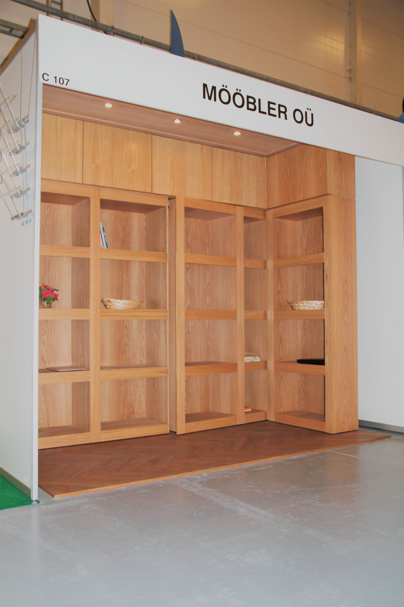

Peituksega mööbel on suurem mööbliese, nagu raamaturiiul, veiniriiul või riidekapp, mille sisse on ehitatud peidetud uks, mida lihtsa vaatluse korral on võimatu või väga raske märgata. Peidetud uks on tavaliselt ehitatud kui ühe sektsioonina suuremast mööbli osast, mis sulandub ülejäänud osadega kokku sellisel kujul, et tähele panna seda, ilma teadmisetta et see seal olemas on, on peaaegu võimatu. Peidetud ukse erinevaid avanemismeetodeid on mitmeid, näiteks saaks seda avada näidates õigele kohale selleks eraldi loodud kaarti, mis mahub rahakoti vahele, või mööbli peale/sisse peidetud raskestimärgatavale nupule vajutades, või siis lihtsalt seda õigel viisil tõmmates. Peituksega mööbel on eritellimusmööbel, ning Mööbler OÜ on suuteline just sinu vajadustele vastavat peidetud uksega mööblieset looma, sõltuvalt tahtest, mööbli suurusest ning liigist ja selle mööblieseme tavalisest kasutusfunktsioonist.
Vajutage ja tirige rohelist ringi et näha muutust.
Peituksega mööbel suudab täita mitmekülgseid funktsioone, olles esimese ja tähtsaima asjana kvaliteetne ja täiesti funktsionaalne mööbliese, mis täidab kõik tavalise mööblieseme ülesanded, ning teise punktina kui varjatud uks mingisse ruumi. Peituksega mööbel võib olla keskpunktiks tervele toale, olles pidevalt käitluses ja avatud olekus, et näidata selle toredat funktsionaalsust kui väga erilise uksena kas siis järgmisesse, või peidetud tuppa, kuid samas saab see olla kui tavaline suurem mööbliese, millele tavaline varas ei oskaks teist pilkugi heita, kui teil oleks vaja ära peita näiteks seifiruumi, millele see peidetud uks oleks kui lisatud turvameede- seifi on raske sisse murda, kui seda on võimatu leida.
Peituksega mööblieksponaat 2015. a Interjöör ja Aed messil